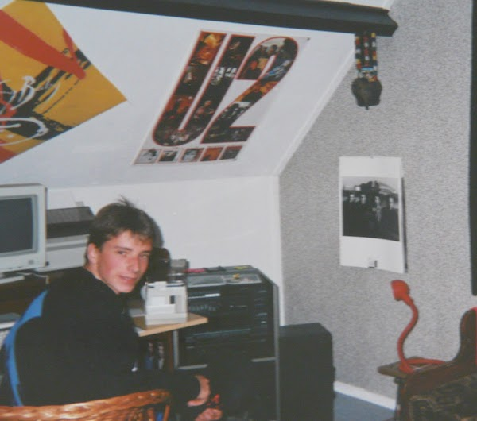

U2 Data Analytics
Why U2 Data Analytics?
Well, first of all because I am a big U2 fan, a spark that was lit when I purchased the single ‘Pride (In the Name of Love)’ in an old-school record store back in 1984. My U2 concert mania started after my sister gave me the album ‘Rattle and Hum’ for my 16th birthday - we had moved on from black records to CDs by then. I missed out on tickets for the Lovetown Tour at the turn of the decade, but did score a ticket for the ZOO TV Tour show on June 15th 1992, in Rotterdam, the Netherlands. I could write a book about the next decades, the albums and all the concerts I attended, but let’s not get carried away for now. So that was the first reason.
Second, I am a data scientist. I am a plant molecular biology and genetics scientist by training, and at some point in my professional journey I transitioned into bioinformatics, scripting, coding, trying to make sense of the avalanche of data coming from new genetic and genomic technologies like the Next-Gen Sequencing revolution in the first decade of this century. Now I work in pharmaceutical data science, data strategy and governance. So yes, you can say that I love to dig into data, to uncover hard to find insights that can help us to bring new medicine or treatments to people with unmet medical needs.
The work documented on this site is my Capstone Project for the Google Data Analytics Certification program.
This was a very good and exciting experience and taught me a lot of valuable lessons in all the different phases of data analytics: Ask, Prepare, Process, Analyze, Share and Act. In addition, during the data visualization part I combined forces with AI assistants (e.g. Claude , Gemini and Perplexity) to troubleshoot the code and to create even better visualizations, e.g. the zoomable, interactive world maps of U2 concert locations over time and the U2 Setlist Alignment app.
The data used in this project was obtained from the excellent online U2 concert resource u2gigs.com. Permission to do so was requested and kindly granted by Matt @ u2gigs.com. Thank you so much!
A big thank you to my wife who has been on this U2 adventure with me and also provided very valuable feedback and input as I analyzed the data.
And of course thanks to U2 and their crew!
Enjoy and let me know if you have any suggestions or other feedback.
Who knows, perhaps we’ll run into each other one day, either at a data science conference or a U2 concert ✌️
Best,
Hans van Leeuwen, November 2024
